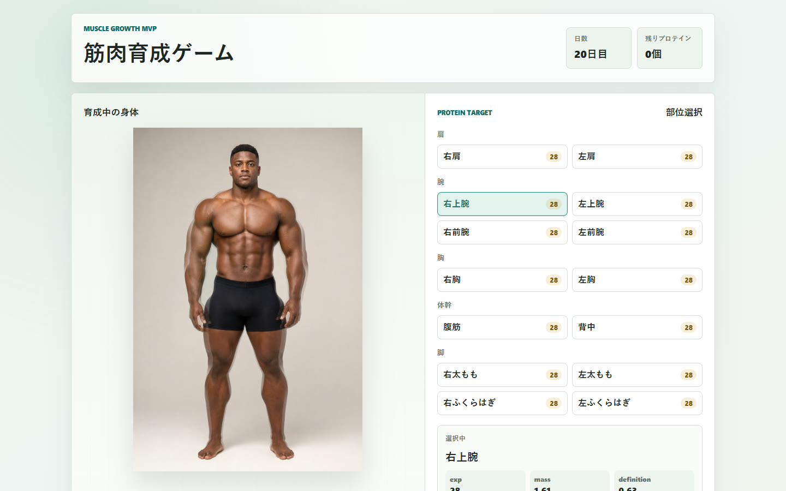
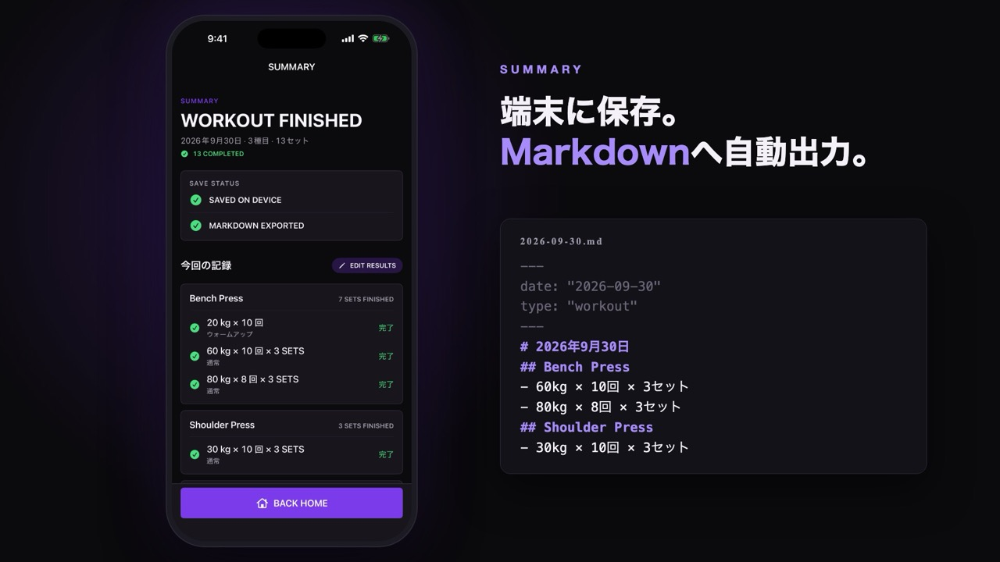
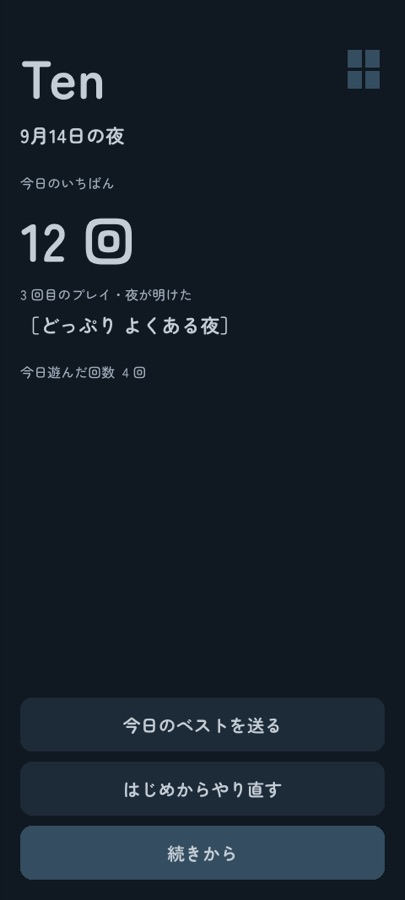
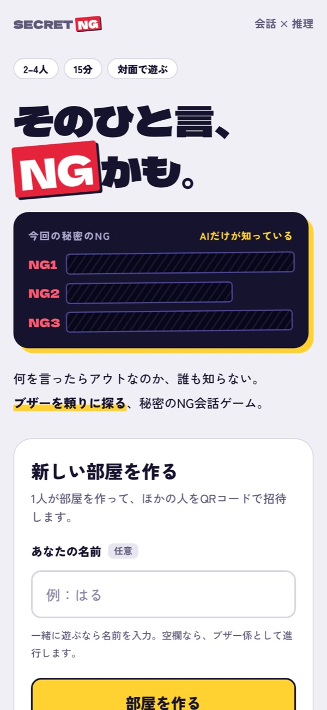

新人エンジニアの AI 活用ポートフォリオ ／ 2026年5月〜9月
使い倒し
AI と作った14の作品を、作った順に。カードを押すと、紹介動画と作った経緯が見られます。
まず見てほしい3作品
14作品
第1期2026.05.08 – 05.24 Windows・Codex
AI への任せ方：対話しながら作らせる

2026.05.13 – 05.20筋肉育成ゲーム
プロテインを体の部位に与えて、部位ごとに体を育てる Web ゲーム。
経緯を見る → 2026.05.20 – 07.04
2026.05.20 – 07.04Tech Radar 505
Tech Compass を元に、複数のニュース媒体から記事を集めた毎朝のニュース面。
経緯を見る →移行期2026.05.25 – 07.19 Windows と Mac を並行・Codex
AI への任せ方：設計書を渡して作らせる
- 動画2026.05.24 – 07.19
基本情報で起きる
基本情報技術者試験の過去問に正解しないと止まらないアラーム。
動画と経緯を見る → - 2026.06.01 – 06.13
LifeLog505
AI と会話しながら、出来事や気持ちを日記に残すアプリ。
経緯を見る → 第2期2026.07.20 – Mac・Claude Code ＋ Codex
AI への任せ方：作らせる仕組みを設計する

動画2026.07.22 – 08.07RepLogix
ジムの筋トレ記録を少ない操作で残し、Obsidian に保存するアプリ。
動画と経緯を見る →- 2026.07.29 –
SecondBrain
思いついたことを一行投げるだけで、Claude が整理してくれる「第二の脳」。
経緯を見る → - 2026.08.17 – 09.16
研修の総合演習
実店舗の来店促進のための Web サイトを、新人3人と PM 1人で作って納品した。
経緯を見る → 
2026.08.31 – 09.14Ten
夫婦でほっこり笑えることを目指した Android ゲーム。初めての Unity・3D。
経緯を見る →
2026.09.23 –SECRET NG
AI だけが知る「秘密の NG 条件」を、会話中のブザーから推理するパーティーゲーム。
経緯を見る →
該当する作品はありません
作品を通して変わったこと
AI への任せ方
- 対話しながら作らせる（第1期）
- 設計書を渡して作らせる（移行期）
- 作らせる仕組みを設計し、自分は判断と遊ぶことに回る（第2期）
今の使い分け
- Claude Code：判断・設計・指揮
- Codex：実装・画像・反論役
- 自分：遊んで確かめる、面白さと見た目の判断
これから
- 見た目の質（画像・3D・UI）を上げる
- 設計・要件の精度を上げる
- 任せる範囲を広げ、型を使い回す